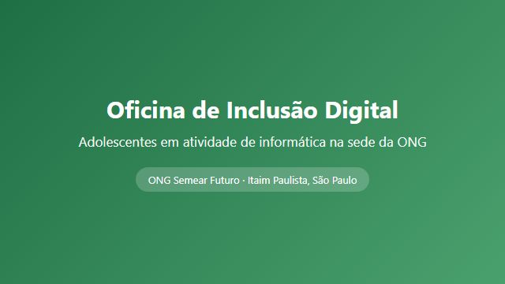

Quem somos
A Semear Futuro é uma organização da sociedade civil sem fins lucrativos fundada em 2014, no bairro do Itaim Paulista, em São Paulo. Atuamos com crianças, adolescentes e famílias em situação de vulnerabilidade social, oferecendo reforço escolar, oficinas de tecnologia e distribuição de cestas básicas.
Somos mantidos por doações de pessoas físicas, parcerias com empresas locais e pelo trabalho de mais de 80 voluntários ativos.

Missão e valores
Nossa missão é ampliar oportunidades por meio da educação, garantindo que nenhuma criança do território fique fora da escola ou sem alimentação adequada.
- Dignidade: atendimento sem burocracia e sem constrangimento.
- Transparência: prestação de contas pública a cada trimestre.
- Território: as decisões são tomadas junto com a comunidade atendida.
- Continuidade: projetos de longo prazo, não ações pontuais.
Como ajudar
Existem três formas diretas de apoiar o nosso trabalho:
- Doação mensal recorrente, a partir de R$ 20,00.
- Doação de alimentos, roupas e equipamentos de informática.
- Trabalho voluntário em reforço escolar, oficinas ou administração.